현록 - 이미지로 보는 Git 개념서
Git을 심도있게 다루진 않습니다. 복잡한 시나리오도 다루지 않습니다.
명령어 사용법은 Document가 더 좋습니다. 여긴 개념을 잡기 위한 상황과 이미지들입니다.
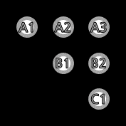
개념
(커밋∉브랜치)
저장소 생성
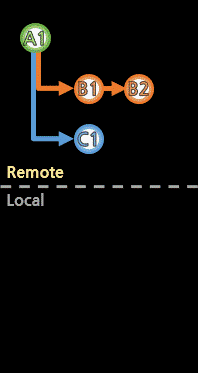
clone
(복제, 시작)
branch
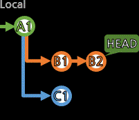
checkout
(위치 변경)
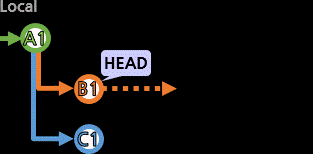
stash
(작업 백업, 임시 저장)
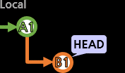
add
(커밋 작성)
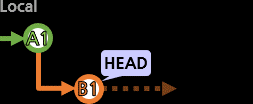
commit
(커밋 완결)
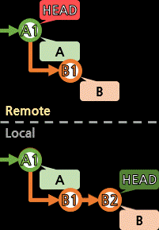
push
(올리기, 반영)
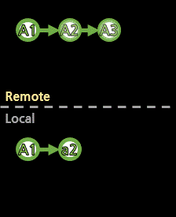
fetch,pull
(내려받기, 갱신)
tag
(표식, 별칭)
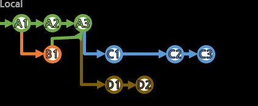
merge
(병합)
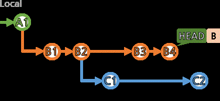
reset
(과거로 되돌리기)
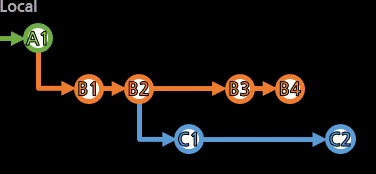
revert
(예전처럼, 반전, ±zero)
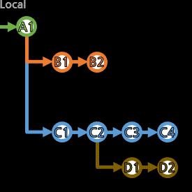
rebase
(수정, 합치기)
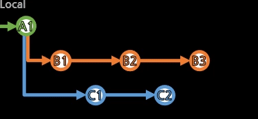
cherry-pick
(복제본 추가)